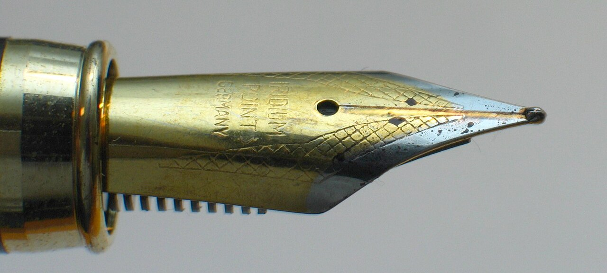

How to Write a Scholarship SOP That Doesn't Sound Copied
Last updated: October 2026. Word limits and essay questions vary by programme. Always check the portal for the cycle you are applying to.

Selectors read hundreds of statements of purpose. Most blur together because they were built the same way: a childhood dream, praise for the host country, a list of achievements, and a promise to return home and serve the nation. If your SOP could belong to any applicant, it belongs to none of them. The fix is not better adjectives. It is a specific story, a specific programme fit, and a specific plan — written in your own voice.
The structure that works
- Open with one concrete moment, not a dream. One scene from your real work or study — a classroom you taught, a clinic queue you managed, a project that failed and what you changed. Two or three sentences, with your role in it.
- Connect it to your field. Explain what that moment taught you about the problem you want to study, in one paragraph. This is the bridge between your past and the degree.
- Name the programme specifically. Which courses, which faculty interests, which facilities or approach drew you — and why they fit the problem from step two. A programme name pasted into a generic paragraph fools nobody.
- Show why you, briefly. Two or three pieces of evidence: work, research, or leadership that prepared you. Do not repeat your CV; select the evidence that supports this application.
- Close with a plan, not a promise. What you will do in the first two years after returning, concretely: the job, the project, the institution, the people you will work with. Vague promises to "serve my country" are the weakest closing in scholarship writing.
Seven mistakes that get essays rejected
- Copying a sample. Selectors recognise circulated samples instantly, and several programmes run similarity checks. A copied SOP can disqualify you across programmes.
- Praising the country instead of fitting the programme. "The UK has world-class education" tells the reader nothing about you.
- Listing your CV in sentences. Your CV already lists achievements. The essay should explain what they mean.
- Writing one SOP for every programme. A shared core story is fine, but each version must name that programme's courses, field and fit. Chevening's four essays, DAAD's development motivation and a Türkiye intent letter are different documents, not one document with the names swapped.
- Exceeding the word limit. Each programme sets its own limit in the portal. Cut to fit; an over-length essay signals that you cannot follow instructions.
- Using the wrong programme name. It happens every year, always from reusing a draft. Read the final version once, slowly, checking every proper noun.
- Hiding behind big words. Clear, plain sentences from a real person beat impressive vocabulary from nobody in particular. If you would not say it in a conversation, do not write it.
How to draft it in practice
Write the first draft fast, without worrying about length, then cut it by a third. Read it aloud: anywhere you stumble, the sentence is too long or too vague. Ask one honest reader — a teacher or colleague, not a paid "SOP writer" — to mark every sentence that could belong to someone else, and rewrite those sentences with specifics only you could write. Then check the portal's word limit, format, and essay questions one final time before pasting, because portals differ and a perfect essay pasted into the wrong question still fails.
One last rule: never pay anyone to write your SOP, and never submit an SOP written by someone else. Beyond the honesty problem, it backfires practically — interviews test the claims in your essays, and you cannot defend a story you did not write.